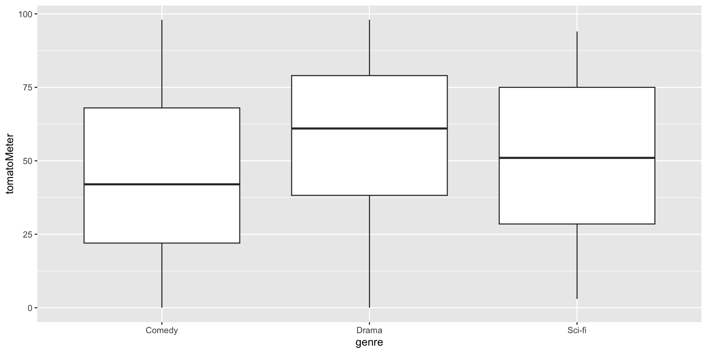
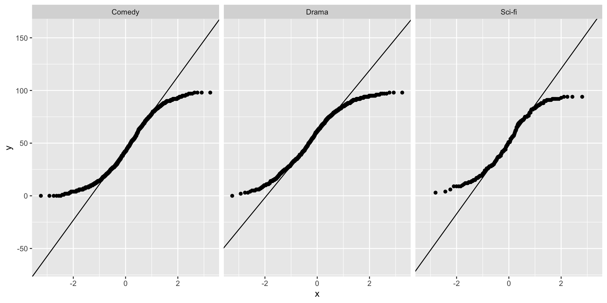

October 22, 2025
In lecture, we looked at whether everyday people rated Drama, Comedy, and Sci-Fi movies differently on Rotten Tomatoes.
Today, we’ll look at the same data, but focus on professional critics’ ratings, which are availble in the tomatoMeter column of the dataset.
Rows: 1,910
Columns: 17
$ id <chr> "youth_2015", "jurassic_world_dominion", "peacefu…
$ title <chr> "Youth", "Jurassic World Dominion", "Peaceful War…
$ audienceScore <dbl> 69, 77, 76, 31, 84, 57, 90, 38, 81, 54, 67, 82, 5…
$ tomatoMeter <dbl> 71, 29, 25, 8, 80, 5, 88, 22, 94, 50, 69, 92, 78,…
$ rating <chr> "R", "PG-13", "PG-13", "R", "R", "R", "R", "R", "…
$ ratingContents <chr> "['Language', 'Graphic Nudity', 'Some Sexuality']…
$ releaseDateTheaters <date> 2015-12-04, 2022-06-10, 2006-06-02, 2001-03-23, …
$ releaseDateStreaming <date> 2016-03-01, 2022-09-02, 2006-12-19, 2001-08-21, …
$ runtimeMinutes <dbl> 118, 147, 121, 95, 105, 99, 111, 91, 95, 130, 101…
$ genre <chr> "Drama", "Sci-fi", "Drama", "Comedy", "Drama", "C…
$ originalLanguage <chr> "English", "English", "English", "English", "Engl…
$ director <chr> "Paolo Sorrentino", "Colin Trevorrow", "Victor Sa…
$ writer <chr> "Paolo Sorrentino", "Emily Carmichael,Colin Trevo…
$ boxOffice <chr> "$2.7M", "$376.0M", "$1.1M", "$5.5M", "$2.3M", "$…
$ distributor <chr> "Fox Searchlight", "Universal Pictures", "Lionsga…
$ soundMix <chr> "Dolby Atmos", "Dolby Digital, Dolby Atmos", "Dol…
$ boxOfficeMil <dbl> 2.7000, 376.0000, 1.1000, 5.5000, 2.3000, 35.0000…We will recode our IV genre as a factor variable rather than as a character variable. More broadly, this recoding is very important, especially when your IV is coded as a numeric variable. If you specify the IV as numeric, most ANOVA functions will give you output, but it will be incorrect. Specifically, these functions will treat group codes as a continuous variable rather than as a grouping variable.

No obvious outliers or heteroskedasticity (boxes are about the same size)

Each genre seems to have some amount of non-normality
aov Approachaov is R’s built-in command for running ANOVAs. aov is also the class of object outputted by a function call to aov(). This approach assumes homoskedasticity, which we’ll address later.
This is very similar to the lm approach:
Here, we reject the null hypothesis, indicating that critics rate different movie genres differently on average.
The effectsize package includes functions to calculate \(\eta^2\)and \(\omega^2\).
Both of these effects are relatively small
A one-way ANOVA was conducted to assess the relationship between the Rotten Tomatoes tomato meter (DV) and movie genre (IV). There was a significant association, \(F(2, 1907) = 55.1, p = <.001\), \(\omega^2 = .05\).
emmeans PackageIn lecture we showed some “built-in” functions for multiple comparisons. Here we’ll look into another option: the emmeans package.
emmeans() function. The main arguments of this function are you aov object and your IV(s), which you specify after the specs = argument.Then, you can apply many of the emmeans package functions to the newly created object to compute all sorts of pairwise comparisons and contrasts.
emmeansWe can calculate the Cohen’s \(d\) between every group pairs. If you remember the formula is \(d_{i,j} = \frac{M_{i} - M_j}{\sqrt{MSW}}\). The eff_size() function does this for all our groups.
eff_size() requires the em object, the standard error \(\sqrt{MSW}\), and the residual degrees of freedom \(df_{\mathrm{within}}\)The pairs() function will run pairwise comparisons if you enter the em object. You also need to specify the type of adjustment through the adjust = argument.
Here we see that dramas are rated significantly higher than both comedies and sci-fi movies, and that sci-fi is rated significantly higher than comedy
aovThere are many types of adjustments, and the adjust = argument allows for several:
"tukey": this will perform Tukey’s HSD."holm": pairwise \(t\)-tests with Holm-adjusted \(p\)-values."bonferroni: pairwise \(t\)-tests with Bonferroni-adjusted \(p\)-values."Dunnett": an option that doesn’t assume homogeneity."none": no correction.You can try substituting these into the adjust = argument from the previous slide; the only thing that will change is the p-value.
To check contrasts, we can use the contrast() function on the object. We can then specify contrasts using method =. Note that we must specify the contrasts as a list.
We also need to make sure we reference the correct order of our factor levels. We can check this as follows
So what will my contrasts look like if I want to test the hypothesis:
Here, we reject \(H_0\) for both cases, so we find that dramas are rated significantly differently than sci-fi and comedy movies.
aovFirst, we need to compute weights for WLS estimation. Weights are the inverse of the group-level variances (\(W_{\mathrm{group}} = \frac{1}{S^2_{\mathrm{group}}}\)).
Next, we add these weights to our aov() call.
aovWe can do White’s adjustment with aov output, with a little help from the car package.
aovNotice that WLS and White’s adjustment give very similar \(p\)-values.
The message “Coefficient covariances computed by hccm()” refers to a particular version of White’s adjustment. We won’t go into details of this in this class.
The default R methods don’t include all of the robust estimation methods and post-hoc comparisons that we might want to use. Other packages have been developed to make these methods more easily available and more user-friendly. We’ll learn about two ANOVA commands in new packages today: ez from ezANOVA and welch_anova_test from rstatix.
ezANOVA makes it easy to specify more complicated models, and it will be the main function we use for more complex ANOVA models. Another advantage of ezANOVA is that there is an option to return an aov class object, so all of the functions above that used aov() objects can also use ezANOVA output.
ezANOVAInput:
data: dataset (other inputs are column names from this dataset)dv: dependent variablewid: within-subjects ID (person identifier variable - required)between: between-subjects factor (grouping variable in one-way ANOVA)Output:
ezANOVA only gives the numerator and denominator \(df\), \(F\) statistic, \(p\) value, and ges = eta-squared effect size (\(\eta^2\))ezANOVA also returns Levene’s test for homogeneity of variance. If this test is rejected, you have evidence against homogeneity, and you definitely want to use Welch’s test, WLS or White’s adjustment.ezANOVAezANOVA tends to give a lot of warnings, many of which can be ignored.
ezANOVA will automatically convert your subject identifier variable to a factor (if it not already a factor). This is usually appropriate, so the warning can be ignored.
ezANOVA will also warn if you don’t have equal group sizes. For the one-way ANOVA, you don’t need to worry about this (changing the type argument won’t change your output). This will matter when we have more than one IV.
ezANOVATo return an aov class of object, run:
Be careful with this option - not all specifications (e.g., White’s adjustment) will be carried over to the aov object.
Welch’s correction is available in the rstatix package. Functions in this package will not run with grouped data (we used the group_by function earlier), so we ungroup the data first.
Finally, if we wish to avoid assumptions of normality, we can run the Kruskal-Wallis rank sum test, which also rejects the null hypothesis.
To follow up with multiple comparisons, we might use pairwise tests that make the same assumptions, such as the pairwise Wilcoxon rank sum test:
Many new functions today! Here is a summary of all of the functions we used and what package they belong to.
Functions:
aov(DV ~ IV, data) (returns aov class output)anova(lm(DV ~ IV, data)) (very similar to aov())ez::ezANOVA(data, DV, ID, between = IV) (in ez)ez::ezANOVA(data, DV, ID, between = IV, return_aov = TRUE) (returns aov output)rstatix::welch_anova_test(dataset, IV ~ DV) (Welch)ez::ezANOVA(data, DV, ID, between = IV, white.adjust = TRUE) (White)car::Anova(aov(DV ~ IV, data), white.adjust = TRUE) (White)aov(DV ~ IV, data, weights = ...) (WLS)anova(lm(DV ~ IV, data, weights = ...)) (WLS)effectsize::eta_squared(aov) (\(\eta^2\))effectsize::omega_squared(aov) (\(\omega^2\))emmeans::eff_size(emmGrid, sigma, edf)(Cohen’s d)ez::ezANOVA(data, DV, ID, between = IV) (\(\eta^2\))pwr::pwr.anova.test() (in pwr, equal sized groups)pwr::pwr.f2.test() (in pwr, groups need not be same size)Post-Hoc Tests
emmeans::pairs(emmeans(aov, specs = IV, adjust = ...))A Priori Contrasts (covered in lecture slides, not lab)
emmeans::contrast(emmeans(aov, specs = IV), method = list(= c(...)))summary(multcomp::glht(aov, mcp(DV = c(...))))Nonparametric Methods
kruskal.test(DV ~ IV, data)pairwise.wilcox.test(x = DV, g = IV, p.adjust.method = ...)